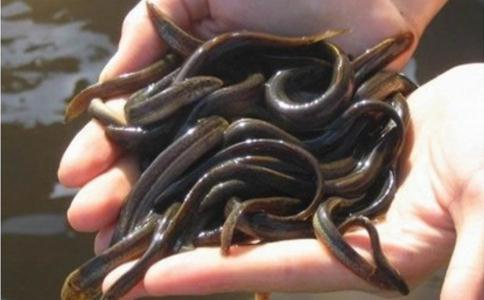

清朝乾隆年间，在浙江西湖附近住着一个大户人家，这家的主人姓徐，人们习惯称呼他为徐财主。徐财主年轻的时候，家境并不十分富裕，但因杭州盛产丝绸而且是文明遐迩。家家户户都制作丝绸，而他却贩卖丝绸，没几年他就成为了远近文明的“暴发户”。他也象其他富户人家一样娶了三妻六妾，添子添孙家丁兴旺。他的这些妻妾也真争气，没几年功夫，就给他生了七个儿子和五个女儿。他的儿女们长大后和他一起做丝绸生意，而后也都结婚生子，因此他的家族膨胀为五十一口人。说来也怪，这个家族无论男女老少都爱吃泥鳅。卖泥鳅的小商贩们也都摸透了他们家族成员的脾气，捞到了泥鳅专门到他们家门口叫卖。他们也真买，成篓成篓地往家买。
泥鳅买到家后，妇人们齐上阵，拿来大大小小的盆子，把泥鳅倒到盆子里，然后向每个盆子里洒上几把盐，用盖子一盖，泥鳅在盆子稀里哗啦地乱窜起来。他们说这道“工序”是让泥鳅把吃到肚子里泥吐出来，也叫“净胃”。第二道“工序”，就是把“净胃”后的泥鳅捞出来，用清水洗干净，往烧得滚开水的锅一倒，迅速盖上锅盖，泥鳅在锅里把锅盖顶的劈啪乱响，还不时地发出“吱吱”的惨叫声，半刻钟不到，一切都恢复了宁静。妇人们这时候，才松开按在锅盖上的双手，有说有笑地去收拾碗筷儿。酒具，准备开餐了。他们就是这样年复一年地吃着泥鳅……
一晃徐财主已年过半百，突然间得了一种怪病，浑身灼热疼痛。他请遍了杭州的名医术士，吃遍了成方。秘方。偏方，病情就是不见好转，反而有加重的趋势，这时他已耗去了万贯家财。实在是没辙的情况，他就到处张贴告示，悬赏求医。告示大意：杭州有徐财主者，得一怪病也，遍身灼热疼痛难忍之。欲求神医去吾之病痛，必赏黄金千两哉。
一个月过去了，无人来接告示，徐财主此时度日如年恨不得悬梁自尽，了此残生。忽一日，来了一位老和尚，左手托一钵，右手拄禅杖，身上披一鲜红
“自己造业自己平，念上千遍《
说完，从怀里掏出一本《金刚经》，递给了徐财主，口中念着佛号，转身要走。徐财主急忙说：“大师从哪里来，又要到哪里去？”老和尚说：“我从杭州灵隐寺来，到杭州灵隐寺去。”
徐财主牢记老和尚说过的话，每天全身心地念着《金刚经》。对于被怪病折磨的死去活来的徐财主来说，只要能好病，别说念一千遍《金刚经》，就是念上一万遍《金刚经》，他也不觉得是难事。俗话说：久病无孝子。自从徐财主得了这种怪病以后，他的妻妾儿女都渐渐疏远了他，生怕徐财主让他们伺候，花他们的钱，只有徐财主的大老婆一心一意地照顾他。当然，徐财主去劝说他们不要再杀泥鳅吃，但谁肯听他的话呢？他现在没钱没势了。而他们依然做着丝绸生意，照旧杀泥鳅吃。
徐财主每天起早贪黑，念三十三遍《金刚经》。他越念越觉得身上灼热疼痛感在逐渐减轻，身体一天比一天轻松起来。一个月后，他的怪病完全好了，此时他更加坚信老和尚说过的话了。他和他的大老婆，从此不在吃泥鳅，连条虾米都不吃，干脆吃起长素来。遇到卖泥鳅的他们就买来，到进杭州西湖里放生。而且，他们还坚持每天念上几遍《金刚经》。
徐财主和他的大老婆都活到七十一岁去世了。而他原来妻妾儿孙们活到五十多岁，都得了和他一样的怪病纷纷去世了。从此，徐氏家族消亡了。
作者述：
一九九四年，我到杭州旅游。在参观灵隐寺时，听到一得道高僧讲法时说起上面的故事，他说现在社会出现的一些灾祸，皆是因为那些人前世造孽深重，今世鬼使神差聚集到一起而死亡。
他又举一例，说有一架波音747客机，因机身有一裂纹未曾被检查出来，在飞行途中，拦腰折断，机后舱起火，烧死摔死四十九人，据说这些人都是做丝绸生意的；机前舱少部分人幸免遇难，其中有一对老夫妇掉在树上，身上轻度烧伤，住院后一个月后康复。其中那个老头的前世就是徐财主，我就是救他的老和尚，烧死摔死的那四十九人就是他的妻妾儿孙。
猎杀野生动物的过患 在苯波教的念诵中记载，在古代，某些苯波教的奸臣修砌灵墓，宰杀了鹿、野牛等各类野生动物来祭祀笨波教的天神。当时，国王赤松德赞看见将血肉供养视为善法的笨教彩盘后问
国王又问：“屠杀野生动物的人今生要受到什么
马熊、狼、豺三种是魔的牲畜，猎杀它们必将激怒恶魔，魔损害人的心脏，杀生者的子孙七代都上了魔的黑名单，罹患不可救药的疯病而死，有些因脑溢血而亡；有些因心情悲伤而自尽；有些则是骨肉相残，血腥屠杀而毙命。他们后世要偿五百次生命，最终还要堕入众合地狱，人间十七亿年中不得解脱。
雪鹿、猞猁、岩羊三者是妖精的牲畜，捕杀它们的人就必然被妖精盯上。妖类集中精力危害孕妇与孩子的生命。他们中有些感受断子绝后的痛苦，妇女不生育后代；有些被夺去胎儿的性命；有些胎儿无法产出，结果母子一同惨死；有些虽然降生下来，却也是无法医治的盲聋哑残废人，并且不久便离开人世。后世要偿还五百次性命，之后又转生到剑叶林地狱，人间一亿年中无有解脱之时。
鱼、毒蛇、蛇三者是龙的牲畜，杀害它们的人就成了恶魔龙擒拿的对象。龙类损害他们的皮肤与血液，令他们皮间生疤后不时弥漫水疤，被病苦长期折磨而死；有些人血管中有毒虫在动，身体扭曲，张口瞪眼而死；有些人头发、眉毛脱落，活着时一根根断掉，得麻风病后被人逐出人群，痛苦不堪而死。后世堕入裂如青莲花地狱中，需要在此住十六亿年，还要偿还五百次生命。还命债在堕地狱前还是在其后不一定。
虎、豹、鹿三者是星曜的牲畜，杀了它们必将触犯星曜。曜类便损害他们的脉，使这些人脉道中的气血紊乱，不能动弹，最终眼珠陷入颅内而死；有些右上身扭曲，四肢僵硬并遭受盲哑等痛苦而亡；有些人著黑红恶魔，突然中毒，栽倒在地，一命呜呼。后世还完五百次命债后还要转生到尸粪泥地狱，人间十九亿年中不得解脱。
狐狸、猴子、獐子三种野生动物是独角罗刹的牲畜，杀了它们必会激怒独角罗刹，这些人也就上了独角罗刹的黑名单。罗刹进行内外损害，挑拨离间，引起混乱，造成同胞兵戈相见，互相残杀而死。有些人的妻子心中入魔，从早到晚争吵不休，
羚羊、穴熊、山兔是鬼王的牲畜，杀害它们便会激怒非人鬼王，散布四大紊乱之灾。非天鬼王危害人们的牲畜与受用，造成房屋失火、地震、田地、房屋沉陷。山崩时，牲畜、田地、房屋压在下面，最后那些人饥饿而死；有此人惨遭盗贼、怨敌以及暴风洪水的威胁，悲痛不已；有些人农田遭遇锈病、霜冻、雹打，牲畜染上呛咳、牛瘟、霍尔病，使得受用一无所剩，不得不向他人乞讨，而且所讨之食也成了死缘。后世还五百次命债后又转生到无门铁室地狱，人间十亿年不得解脱。
马、牛、羊三种动物是人类的牲畜，因为在藏地雪域人与天人恪守同一誓言，所以杀了这些动物必将激怒天神
无论是捕杀飞禽还是猎杀有爪动物，偿还命债与感受异熟果报都是一模一样。这也是就主要方面来说的，不定的果报各种各样，众生的业感不可思议。总之，杀生受报：今生惨遭疾病魔障逼迫的痛苦；死后还要承受地狱的痛苦与寿量等；现世没有遭到不幸，如
此外总的十不善业与分别的五无间罪等恶业中杀生的果报与痛苦实在无法想象。今生来世投生在何处都要感受无量痛苦，这是无法避免的因果规律。所以，不诚信因果、毫无恻隐之心、恣意造杀生之罪业的人们必然要感受这样的异熟果，这是我莲花生的忠告。”
国王边听边流泪，听完这番话他悲痛地说：“上师，这实在太悲惨了。那么请问上师，如是遣除杀生恶业异熟果报的一切病魔有什么方法呢，而且后世有何办法能脱离这般难忍的恶趣痛苦？”邬金莲师沉痛地说：“在未来末世，人们极其喜好杀生罪业，无有忏罪的时间，能够灭尽、遣除今生、来世所有异熟果的方法，没有比戒杀、令人戒杀更为有效、功德更大的了。哪怕仅仅发誓不杀某些有情，那人也不会遭遇不幸、痛苦与损害。如若能够彻底戒杀，除了往昔深重难忏的恶业以外，根本不会出现痛苦不幸，天龙八部也会保佑庇护，而且我莲师将恒时关照，解除彼等一切畏惧。已趋入后世
大王，所有罪业中无有比诽谤三宝的邪见以及杀生令杀生的异熟果更为严重的了。同样，比戒杀与教人戒杀、救护生命与教人救护生命更大的善果我莲华生未曾见过。因此，所有的君臣，你们为什么不精勤戒杀放生呢？大王，你是继续虔信苯波教罪恶屠杀之业呢，还是立即戒杀放生，请好好斟酌。恒时不害众生的教义唯独